Let us find out the attractions of France mainly in Paris... So, where do we to
start?
Before we start, let's have a look at the country of France...
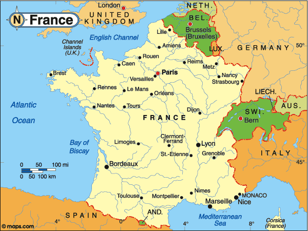
COUNTRY OF FRANCE
France, officially the French, is unitary sovereign state comprising territory
in Western Europe and several overseas regions and territories. Metropolitan France extends from the Mediterranean Sea
to the English Channel and the North Sea, and from the Rhine to the Atlantic Ocean; due to its shape, it is often
referred to in French as l’Hexagone. France is one of only three countries (withMorocco and Spain) to have both Atlantic
and Mediterranean coastlines. France has a population of 66 million. It is a semi-presidential republic with its
capital in Paris, the nation's largest city and the main cultural and commercial center. The Constitution of France
establishes the country as secular and democratic, with its sovereignty derived from the people.
PARIS AS THE CAPITAL OF FRANCE
Paris is the capital and most populous city of France. Situated on the Seine
River, in the north of the country, it is in the centre of the Île-de-France region, also known as the région parisienne.
The City of Paris has a population of 2,249,975 inhabitants (January 2011), making it the fifth largest city in the
European Union measured by the population within the city limits. Paris and its suburbs have a population of 12,292,895
inhabitants, making it the second or third largest metropolitan area in Europe, with London and Berlin, depending on the
area measured.
So, let's begin...
The Eiffel Tower is an iron lattice tower located on the Champ de Mars in Paris.
It was named after the engineer Gustave Eiffel, whose company designed and
built the tower.
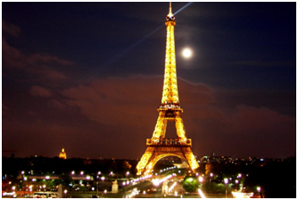If you need to read a review of the
Eiffel Tower in order to visit it you were probably born in another planet. This is a classic. A visit you will never
forget in your life. It's the definition of Paris, modern; out of the box, but with elegance that somehow transcends
time. It's to be savoured from outside, inside, near and far.....day and night....
“This is DREAMLAND! After planning for the past 5 years or so me and my dad
finally made it last summer! I don't know if it's one of the 7 wonders but I really think it should’ve been if it
isn't... Honestly saying it is so beautiful and to see it right there In front of our eyes was just unbelievable and
till this day we still pinch ourselves! We finally got it booked a year in advance and it was worth the wait, we did
go up a bit and just to see the scenery from the first or second floor was just amazing and something that you could
only dream about in life... We know why it's called the lovers paradise and the best place for romance as the place was
heaving with ROMEO & JULIETS!! We have booked again for 2015 and can't bloody wait!!”
-Joe I
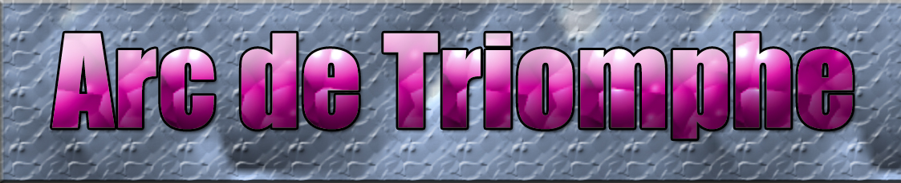
The Arc de
Triomphe de l'Étoile is one of the most famous monuments in Paris. It stands in the centre of the Place Charles de
Gaulle, at the western end of the Champs-Élysées.
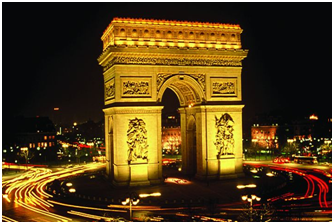If you don't want to wait on
line at the Eiffel Tower, the Arc de Triomphe is a great way to climb to the top for outstanding views of Paris. There
are approx 380 steps up a spiral staircase so make sure you are in decent shape to make the climb up and down. There
used to be an elevator but it was not working when we visited this last time. There are also some nice historic
presentations at a level half way up to rest and review. I highly recommend.
“TRIUMPHAL ARC! It was cool to see the arc when I got to Paris. Though it is
difficult to get to as crossing the street can be a job itself, the iconic monumental arc is definitely worth visiting
when stopping through Paris! The triumphal arch is in honour of those who fought for France, in particular, those who
fought during the Napoleonic Wars. Engraved on the inside and at the top of the arch are all of the names of the
generals and wars fought, I thought it was pretty cool!”
-ZexSwain
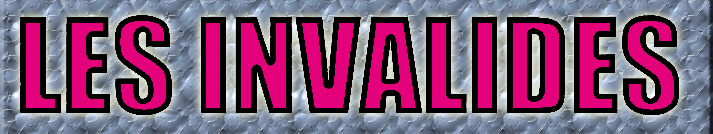
Les Invalides, officially known as L'Hôtel national des Invalides, or also as
L'Hôtel des Invalides, is a complex of buildings in the 7th arrondissement of Paris, France, containing museums and
monuments, all relating to the military history of France, as well as a hospital and a retirement home for war veterans,
the building's original purpose.
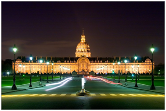If you are a serious military buff then this
is for you. It had one of the most comprehensive collections of armour and weapons I have ever seen. It's the nation's
largest collection of French military weaponry. It doesn't cost much, considering what there is to see but it is closed
on the first Monday of the month but open from 10:00 to 18:00 Monday, Wednesday and Saturday and closes at 21:00 on
Tuesdays. There are cases full of armour for both men and animals, swords, pikes, halberds, all sorts of guns and
artillery. Filming is O.K. which is great if you want to take pictures for your History classes. It's amazing how
ingenious, artistic and hard-working people can be when it comes to killing each other! If you are particularly
interested in this stuff I bet it's amazing, I enjoy these types of museums but this one was a bit intense for me a lot
of the same but in a fabulous building with an amazing collection.
“Surprisingly Enjoyable! I travelled with my adult son, to whom the Hotel des Invalides had been recommended,
so we made the long walk there from the Eiffel Tower. The main attraction was on an upper floor where we found the
multitude of 3-D 'maps' of regions, towns, bays and other areas which Napoleon had constructed in order to plan his
campaigns in detail, the 'intelligence' now acquired with sophisticated technology. These huge miniature landscape
'maps' are astonishing and well worth a visit. No supporter of warfare in any form but a one-time student of Napoleon,
I was totally fascinated by so many angles of this dimly-lit floor and its treasures, beginning with the skill needed
in executing Napoleon's requirements. Just brilliant...it was disrespectful, but I wanted to play with them. The
officers' uniforms of past eras (why so ornate? I kept wondering), the appalling yet weirdly beautiful arms of past
warfare - all opening one's eyes to the country's history - came to a climax when we emerged from our swirling
imaginations into the reality of being in the presence of Napoleon's tomb...a marvellous half-day in Paris.”
-Annie G.
The Panthéon
The Panthéon is a building in the Latin Quarter in Paris. It was originally built as a church dedicated to St. Genevieve and to house the reliquary châsse is containing her relics but after many changes, now functions as a secular mausoleum containing the remains of distinguished French citizens.
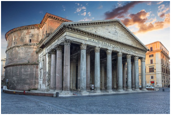 This is a truly fascinating site in Paris, and one that seems to be overlooked given everything else Paris has to offer. However, if you have a few hours to stroll through this massive monument to French thinkers, it is well worth your time. The rotating displays on the main floor highlight various people and periods of France's illustrious past. Be sure not to miss the catacombs beneath the Pantheon, where you will see the final resting places of Voltaire, Rousseau, Dumas, Hugo, and many more. Not only is the monument itself an amazing piece of architecture, but the meaning behind it, and the stories within truly make it worth a stop.
Today, the Pantheon is best known as the final resting place of many of France's best known citizens. Going down into the crypt can be a rather busy affair with crowds thronging to catch a glimpse of the mausoleums of an illustrious lift of characters, including Marie Curie, Emile Zola, Alexandre Dumas, Voltaire, Victor Hug o and Louis Braille. However, don't miss some of the larger than life paintings upstairs that celebrate the life of St Jeanne d'Arc, Clovis I who was apparently initially buried on the site of the Pantheon in the 6th century, and the crowning of Charlamagne as Holy Roman Emperor.
“LE PANTHEON- A WALK IN HISTORY! The catacombs of the Pantheon are truely awesome. To see Victor Hugo's tomb, Marie and Pierre Curie, Louis Braille, Alexandre Dumas, Voltaire, Emile Zola and the list goes on. Walking from room to room and seeing all these old, famous tombs is unbelievable. So many sites in Paris, make the Panteon one of them. You're taken back in time and the presence of the moment is truely awesome.”
-pstarr301
Conciergerie
The Conciergerie is a former prison in Paris, France, located on the west of the Île de la Cité. It was part of the former royal palace, the Palais de la Cité, which consisted of the Conciergerie, Palais de Justice and the Sainte-Chapelle.
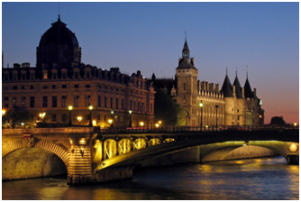Dating back to the 6th Century, this site was the royal residence for eight hundred years, until Charles V vacated the premises and turned part of it into a prison at the end of the 14th Century. Throughout the years 1793 and 1794, over 2,700 people appeared before the Revolutionary Tribunal and were deemed to be an enemy of the revolution and were executed. Or they were tortured first and then executed. It's most famous defendant, Marie-Antoinette, earned her own private cell, of which there is a mock-up. In addition, there is a brief video detailing her arrest and execution. I was fortunate enough to visit while there was a special exhibit on Louis IX, or Saint Louis; the exhibit ends on January 11, 2015. It is a wonderfully informative presentation on the life and accomplishments of Louis IX, who was later sainted.
The exhibit takes up much of the first floor; when this ends, I imagine there will be a large open space until the next special exhibition. I w ouldn't necessarily be put off by that as I admire the marvellous stonework and architecture. This is covered by the Museum Pass, or is included in the price of the ticket to Saint Chappell. Hot tip: The entrance to this is about 20 yards away from the entrance to Saint Chappell, on the same street. This Conciergerie on the banks of the Seine River can’t be missed since it is so imposing and with those towers that immediately betray its medieval origins. It has always been my favourite building in Paris from an architectural standpoint. It is most famous for being used as a prison during the French Revolution (1789-1799) and for having held Queen Marie-Antoinette the last months of her life before she was sent off to her execution by guillotine at Place de la Concorde when she was 38 years old in 1793. Her husband the King had already been executed earlier that year. You can visit Marie Antoinette’s cell. It is only a recreation of what her cell would have looked like but just the same it is much nicer t han I would have expected. In fact there are three categories of cells to be viewed, depending on the status of the prisoner and how much money they had.
“UNIQUE! Originally I was going to give this an average review, but upon reflection, I increased it. My favorites were the items from St. Louis - one of his shirts, among other items. Also the parts about the prison and Marie Antoinette were of interest. There are a few toilets in the rear of the lowest floor.”
-KMc4528
Place Vendôme
Place Vendôme is a square in the 1st arrondissement of Paris, France, located to the north of the Tuileries Gardens and east of the Église de la Madeleine. It is the starting point of the Rue de la Paix.
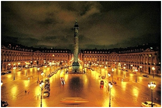Place Vendome is one of the great urban planning breakthroughs of the 18th century, inspired by Place des Vosges, one of the great urban planning breakthroughs of the 17th century. It is especially spectacular when lighted at night. The Ministry of Justice, the Paris office of J.P. Morgan and the Hotel Ritz are here. No "tourist attractions," just great architecture and spatial planning. At present, the Ritz (with its famous Hemingway Bar) is closed for renovation, and Napoleon's column is being restored. The Place Vendome is located near the Louvre and the Place de la Concorde and can be seen from the Tuileries garden. Dominating the square is the Vendome Column erected by Napoleon I to commemorate his great victory at Austerlitz. Its veneer of spiralling bronze plates was made from with metal of the guns captured at Austerlitz and gives it its distinctive look.
“A GREAT PLACE TO STAY! Place Vendome is a great place to stay -- a little walk to public transport, but a very safe and beautiful area, with lots of designer shops and good restaurants. Also very clean, although can sometimes be noisy with the ongoing Ritz renovation.”
-James K.
The Louvre
The Louvre or the Louvre Museum is one of the world's largest museums and a historic monument. A central landmark of Paris, France, it is located on the Right Bank of the Seine in the 1st arrondissement.
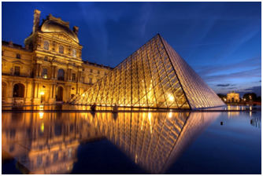The Louvre is such a massive collection of art that it is virtually impossible to see it all in one visit. Though if you don't pre purchase your tickets you have to wait in line which can get so long that it could be considered a must see attraction of Paris as well. Luckily the line moved fairly quickly if you get there early like we did, about 15 minutes before it opened. The staffs are reasonably friendly considering how many people go through that museum. The collections are fairly well organized by cultures and nations. So you can pick your favourites or just wander. Either way the Louvre is a must see attraction. You can personally enjoy the Egyptian, medieval, and Holland collections. I would suggest you pick out what you want to see before hand and grab a map, because the Louvre is huge, somewhat confusing to navigate at times, and amazingly busy all year round. Safe travels!
““Yes, it's worth it!” Despite the long lines to get in and the crowds once you get in, you have to visit Louvre when in Paris. As others have said, there are some options to buy tickets before hand but not necessary. There are so many wonders to check out and it's really up to you which galleries you visit. My one recommendation is that you should prioritize what you want to see BEFORE you get in. That way, you can really make the most of your visit without getting too tired. I recommend the Ancient Egyptian and Babylonian galleries - amazing pieces to view and appreciate.”
-Sujata410
Musée d'Orsay
The Musée d'Orsay is a museum in Paris, France, on the left bank of the Seine. It is housed in the former Gare d'Orsay, a Beaux-Arts railway station built between 1898 and 1900.
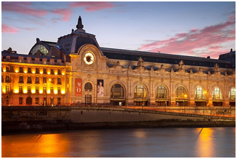This museum is famous for its setting because it was converted from a railway station. Interesting exhibits too but it is the museum itself is a 'must see'. For lovers of Impressionism this is a must. Love the layout; it's very easy to navigate. Took my 90year old mother, hired a wheelchair and it was extremely easy to get around. Staffs are very helpful. And the art is sublime. This museum will give you goose bumps. They exhibit the works of impressionist artists like Claude Monet, Paul Cezanne, Alfred Sisley and of course, not to be missed are Vincent Van Gogh's masterpieces. They prohibit taking photos so you'll be able to appreciate and internalize each works of art better compared to Louvre where it can be noisy and rowdy when there are too many people crowding in a single art piece just to take photos. Their layout is also better; museum is smaller compared to Louvre, but is more intimate and lighting makes each artwork stand out.
“SADE EXIBIT! We loved this museum especially the SADE exhibit which was pretty off the wall. I mean wow if you want your mind blown by this artist slash pioneer, slash crazy man, heretic, lunatic, visionary and freedom fighter than id say you have to see this. At times I was freaked out others I was in awe. My fiancé loved the Monet paintings and we loved taking our thoughts on the artist mind. The Van Gough exhibit was beautiful. The starry night painting was a site to see. Sad to hear that he killed himself at the age of 37. Another surprise section was the furniture. Don't know why but my girl was fascinated by the handmade furniture section. I must say though it was quite nice too. only dislike is there is that you are not allowed to take photos or bring your phones inside the museum. They will quickly check you if you are trying to take shots of things. Other than that it’s a must see in Pairs.”
-Rickey H.
Muséum national d'histoire naturelle
The French National Museum of Natural History, known in French as the Muséum national d'histoire naturelle, is the national natural history museum of France. The main museum is located in Paris, France, on the left bank of the River Seine.
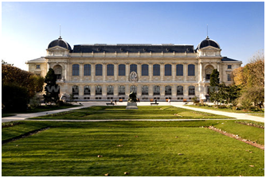The museum is a gorgeous building in itself, and the displays are very impressive. There is 3 floors with various exhibitions, but there is also a separate building to the side of the museum which occasionally holds temporary exhibitions which are also worth a visit. Asides from this, the museum is surrounded by beautiful gardens which are perfect for picnic in the summertime. There is also a small children's play area in the centre which makes this day perfect for families with smaller children. A beautiful space to discover and beautiful collections! Nevertheless, it is regrettable that it is as little interactive for children who cannot read (except the temporary exhibition on spiders which was very entertaining). In addition, we were shocked to read in the room devoted to insects that Wikipedia was cited as a source of information.
"Very good permanent exhibition, temporary exhibitions are more simplistic" The permanent exhibition is very interesting, the collection is very comprehensive and very suitable for the fauna and flora. By cons, permanent exhibitions (I made two: one on JJ Rousseau and those on spiders) are very simplistic, they popularize too much and do not give enough information about their subjects. In the end I came away each time these temporary exhibitions on my end by saying that I did not learn much.”
-Anne B.
Cité des Sciences et de l'Industrie
The Cité des Sciences et de l'Industrie is the biggest science museum in Europe. Located in Parc de la Villette in Paris, France, it is one of the three dozen Cultural Centres of Science, Technology.
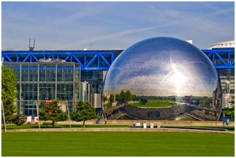
Good day out for children and adults alike. A short train journey from central Paris brings you straight into the park. Some wonderful exhibits, lots of interactive ones. You will need a full day here to see everything. There are plenty of food stalls too and a nice little cafe bar next to the water feature. Cost is minimal to what you see and there are different packages and discounts to be had. Great place to go, alone or with family. Lots of interactive things to see ,do, make, touch...
My daughter and I enjoyed it very much! The only thing is that you need at least half a day to make it....almost all. Better to buy tickets in advance, or to visit it with Paris museum pass, even though there are some temporary exhibitions for which you need to buy extra tickets (available in a "priorities" desk line...credit cards accepted, a little bar with snacks on site and McDonald's in front of the museum...metro goes straight to la Villette where the museum is.
This sightseeing was found interesting and it needs a whole day. There are various sections and levels. It is at Porte de la Villette close to the metro station. The visit was enjoyable. The only thing we disliked were the smelly public toilets which were a bit out of order. It is worth visiting, and it was somewhat a bit educational to children.
“PRESENTATION OVER SUBSTANCE! Lots of space but very few actual exhibits. Superficial, trivial and not a patch on the Musee des Arts et Metiers. If you're interested in science and engineering, it will probably make you angry. If you want somewhere for the kids to run around in with a few "Ooh, ah!" moments then it might be worthwhile.”
-Peter B.
* * *
* * *
Check out the latest news about weather at
www.weather.com
Have an account on Facebook?
Log in to www.facebook.com
Please follow and subscribe me on Facebook and twitter.
Facebook:
valkire.cesa
Twitter:
valkire.cesa
Breaking News!
Malls are very crowded because many people are doing the last minute shoping!
Nokia 1020 and Iphone 6 are battling about its camera. Find out more at
www.camera.com
|